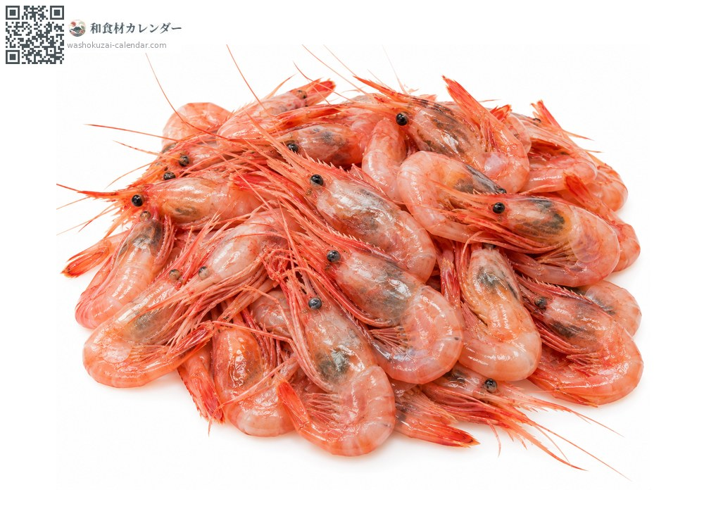
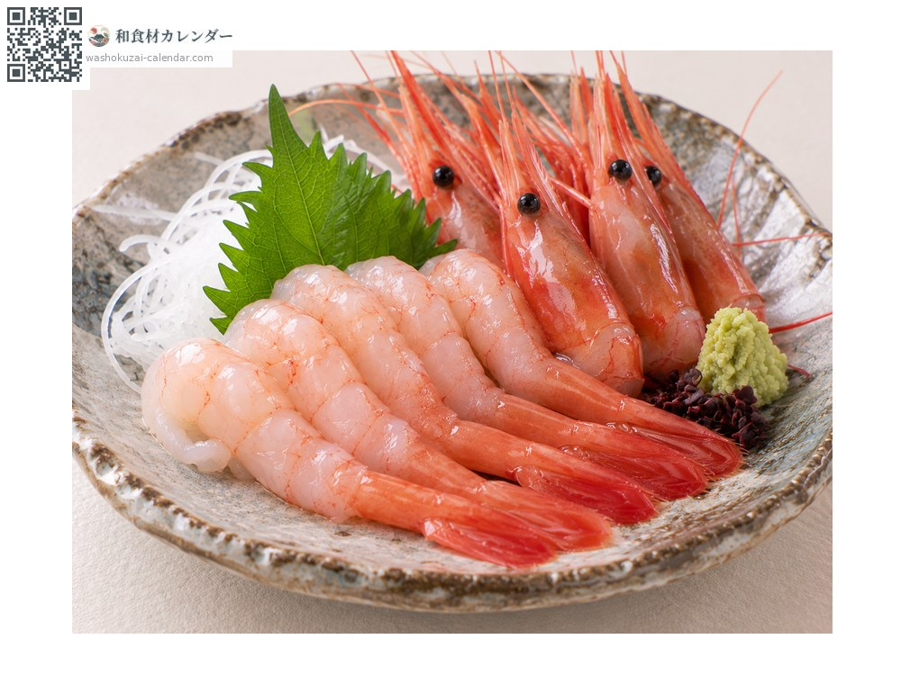
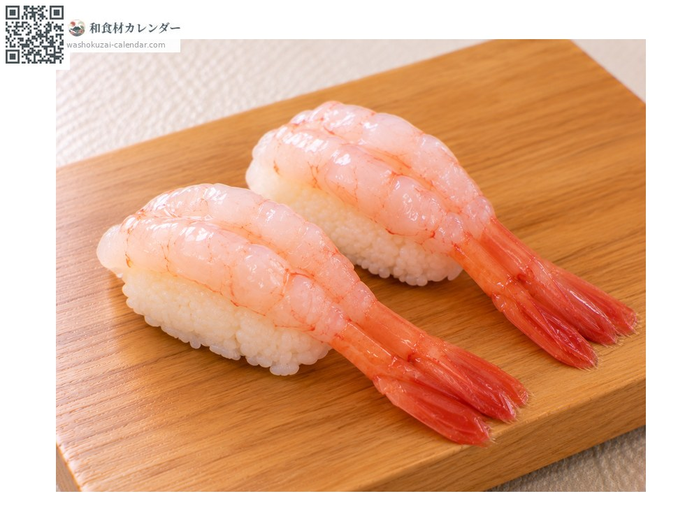
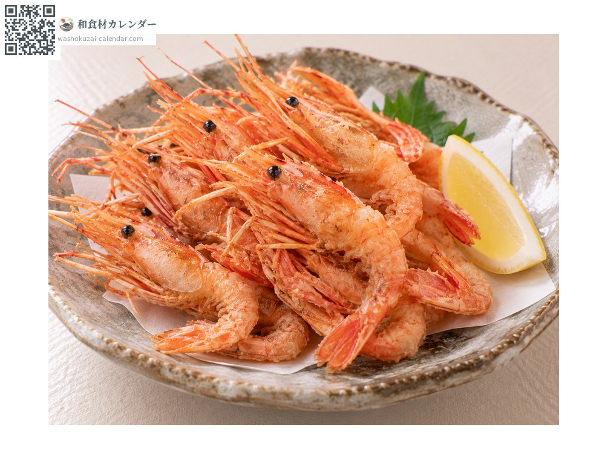
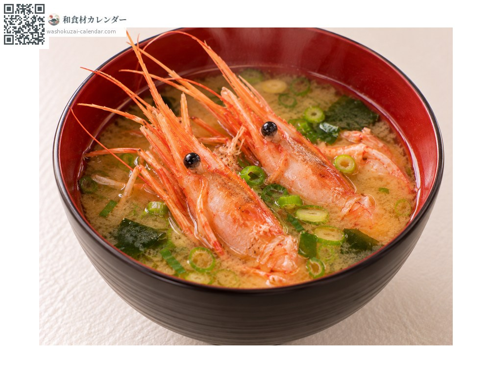

อาหารทะเล
กุ้งหวาน (อามะเอบิ)
甘エビ あまえび amaebi
ชื่ออื่นamaebi, hokkokuakaebi
อร่อยที่สุดในเดือน ม.ค., ก.พ., พ.ย., ธ.ค.

ช่วงที่อร่อยที่สุด
ม.ค.
ก.พ.
มี.ค.
เม.ย.
พ.ค.
มิ.ย.
ก.ค.
ส.ค.
ก.ย.
ต.ค.
พ.ย.
ธ.ค.
ช่วงอร่อยที่สุดมีจำหน่าย
วิธีปรุง

ซาชิมิ
ปอกเปลือกกินดิบ หวานจัดสมชื่อ

ซูชิ
เป็นหน้าซูชิมาตรฐาน มักวางสองตัวซ้อนกัน

คาราอาเกะ
ทอดทั้งเปลือก หัวก็กินได้

ซุปมิโซะ
หัวให้น้ำซุปที่ดี
วิธีเลือก
เปลือกใส หัวไม่คล้ำ เนื้อแน่นตึง
วิธีเก็บรักษา
เสียเร็ว เอาหัวออกแล้วแช่เย็น ใช้ภายในวันเดียวกัน แช่แข็งได้
แหล่งผลิตหลัก
เกร็ดน่ารู้
ชื่อทางการคือฮกโกกุอากาเอบิ เหมาะกินดิบมากกว่าปรุงสุก เพราะกรดอะมิโนที่ให้ความหวานจะเปลี่ยนไปเมื่อโดนความร้อน เช่นเดียวกับกุ้งโบตัน มันเกิดเป็นตัวผู้แล้วเปลี่ยนเป็นตัวเมีย อาศัยที่ความลึกสองร้อยถึงหกร้อยเมตร